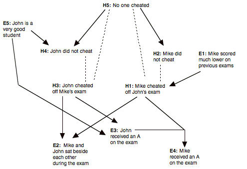
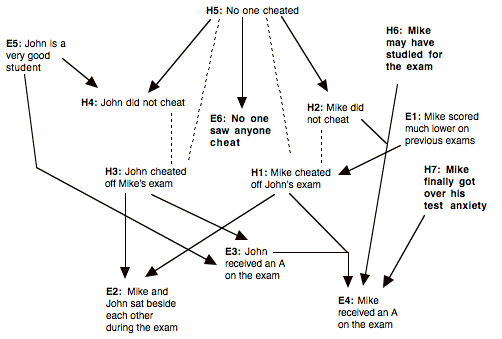

In this unit, we'll talk about distinctions between evidence, hypotheses , and theories. Depending upon who you ask, the definitions for these concepts can vary greatly. From this section you should be able to get a good understanding of what each concept is even if you may not be able to describe it perfectly in words.
In general, we will define a hypothesis as being a statement that attempts to state what might be true in a particular situation. The word "attempts" in the previous sentence is important because some hypotheses accurately describe the segment of reality that they attempt to describe, while other hypotheses can distort, falsify, or misrepresent reality. In other words, some hypotheses are going to be correct while others are not. Here are some examples of hypotheses to help you out:
I will get wet if I don't have my umbrella.
Latrell Sprewell of the Golden State Warriors should be Rookie of the Year.
Recycling helps the environment.
Hypotheses are the essential units, or building blocks, out of which more complicated descriptions are made. This leads us to the discussion of theories. Theories are collections of hypotheses and evidence (which we will discuss soon). An example of such a theory is the Theory of Evolution. This theory consists of many hypotheses such as:
New species are formed by natural selection.
There is a progressive change, over time, in organisms from simple to complex.
Genetic traits are passed from parent to offspring.
Evidence is an extremely important part of any successful theory. Evidence is any body of factual statements on which a belief, idea, or hypothesis is based. Thus, the believability of a hypothesis depends upon the evidence and other hypotheses that support or explain it.
We may believe a hypothesis because it agrees with our own observations (evidence), or because other people have reported that they have made observations that agree with, or support, the hypothesis. All evidence is not created equal, though. For instance, the observation that the world appears to be flat (and not spherical) from our viewpoint is usually considered to be weaker evidence than the evidence that we obtain from photographs taken by orbiting satellites.
How good a piece of evidence is partly depends on how the evidence was obtained: Was a reliable method used? How good are the tools that were used to gather or measure the evidence? Can the data be replicated in another experiment? Is the evidence an acknowledged fact or statistic? Is it a reliable memory or observation? Might some reasonable people disagree with the evidence?
It is important to note that, all other things being equal, evidence should usually be believed over a contradictory hypothesis––unless the evidence is dubious or very unreliable. For example, if a solitary hypothesis contradicts a solitary piece of evidence, then that contradicting evidence should be more believable than the hypothesis. However, if a hypothesis has a lot of supporting evidence and one solitary piece of contradicting evidence, then the hypothesis might be considered to have more truth than the evidence.
For our example of the Theory of Evolution discussed earlier, examples of evidence are:
What are the hypotheses (and possible hypotheses) in the paragraph below, and what is the evidence for them? Label the hypotheses and evidence for easy reference; for example {H1, H2, etc.} and {E1, E2, etc.}. Time doesn't matter, so relax and be creative. You can either label them in the text itself, or write them down on the next page.
Mike is an average student (C average). He is taking a physics class, in which he has turned in the homeworks, which are usually about half correct. His best friend, John, is also in the class. John is an excellent student, who is very diligent with his studies. John speaks out in class, but Mike does not. Both John and Mike received A's on their midterms. The teacher thinks that Mike may have cheated on the exam, since Mike was sitting next to John.
Hypotheses:
Evidence:
In the last part, we talked about differences between hypotheses and evidence. It is possible for hypotheses to explain other hypotheses, as well as to explain evidence. Sometimes two or more hypotheses together (but not individually) explain a piece of evidence. For example, music coming from a room might be explained by Jeff singing (along), or by Jenny singing (alone). However, a duet cannot be explained by Jeff or Jenny singing alone, but only by them both singing. This sort of explanation is termed a joint explanation. Similarly, hypotheses and/or evidence can contradict each other. Remember that it is possible for one proposition to explain and/or contradict more than one other proposition. (A "proposition" or "belief" can be a hypothesis or a piece of evidence.)
The following is an exercise to let you practice determining the relationships between hypotheses and evidence. Remember the following short passage from the last section:
Mike is an average student (C average). He is taking a physics class, in which he has turned in the homeworks, which are usually about half correct. His best friend John is also in the class. John is an excellent student, who is very diligent with his studies. John speaks out in class, but Mike does not. Both John and Mike received As on their midterms. The teacher thinks that Mike may have cheated on the exam, since Mike was sitting next to John.
Draw a diagram representing the relationships between the (evidential and hypothetical) propositions you labeled in Exercise 1. Use a solid line to connect a proposition that explains another, a dashed line for beliefs that are in conflict, and converging lines for beliefs that jointly explain another proposition. (Glance at the example diagram three pages ahead if you are confused.)
Your diagram:
From your diagram, what seems to be the most believable, coherent theory (or set of beliefs)? Why?
Are there other factors, not present in the text, that might need to be taken into account? If so, what are they, and how would they affect your previous reasoning?
Add these new factors to your diagram, in a different color pen.
Based on this new diagram, what are the most reasonable conclusions you can form?
The following pages include one possible analysis of the above situation. Compare your analysis with the following, and be sure that you understand the differences. If you feel that your analysis needs refining, go ahead. But, remember that your analysis does not need to be the same as the one below.
Tanya lists some possible hypotheses and evidence for them:
H1: Mike cheated off of John's exam.
H2: Mike did not cheat.
H3: John cheated off of Mike's exam.
H4: John did not cheat.
H5: No one cheated on the exam.
E1: Mike scored much lower on previous exams.
E2: Mike and John sat beside each other.
E3: John received an A on the exam.
E4: Mike received an A on the exam.
E5: John is a very good student.
Here is Tanya's set of explanatory and contradictory relationships between the hypotheses and evidence:
H1 and E3 explain E4
E1 explains H1
H1 explains E2
H3 explains E2
H3 explains E3
H5 explains H2
H5 explains H4
E5 explains H4
E5 explains E3
H1 contradicts H2
H1 contradicts H5
H3 contradicts H4
H3 contradicts H5
Here is Tanya's diagram of the relationships between the hypotheses and evidence. In our convention, we have the things that do the explaining above the things they explain. You'll notice that we put arrows in the direction of the explanation. You might want to go back and add arrows to your diagram (and any future diagrams), too. You don't have to write out your text in the diagram, like we do here. You can just use your labels. We're just writing out the text here for your ease.

Tanya thinks that no single hypothesis has overwhelming support:
"Both H1 and H3 seem possible. It is difficult to rule out H5, because of the notion of 'innocent until proven guilty.'
Tanya tries to think of other ideas that might be important for understanding what happened. She came up with the following:
H6: Mike may have studied for the exam.
H7: Mike may have finally gotten over his test anxiety.
E6: No one saw anyone cheat.
Here are Tanya's additional explanatory and contradictory relationships between the hypotheses and evidence:
H5 explains E6
H6 and H2 explain H2
H7 explains E4
And here is Tanya's new diagram, with new beliefs in boldface:

Based on this new diagram, Tanya may conclude:
"H1, H3, and H5 all have support, but the evidence is still not conclusive. It's not clear that we have an argument strong enough to accuse anyone of cheating.
Consider the following passage, list the hypotheses and evidence. What hypotheses could be infered from this new information? Add them (along with any explanatory and contradictory relationships), with a different color pen, to your diagram.
John's girlfriend, Mary, is also in the physics class. Mary is a solid B student, but she did very poorly on the exam. Mary and John had studied for the midterm together and were sitting next to each other during the exam.